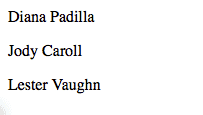

Предупреждение
- Это руководство предполагает
базовые знания Python<http://docs.python.org/2/tutorial/>`_ - Это руководство предполагает an installed Odoo
Создание базового модуля
В Odoo задачи выполняются путем создания модулей.
Модули настраивают поведение установки Odoo, добавляя новые поведения или изменяя существующие (включая поведения, добавленные другими модулями).
Odoo’s scaffolding can setup a basic module. To quickly get started simply invoke:
$ ./odoo-bin scaffold Academy my-modules
Это автоматически создаст `` my-modules`` * каталог модулей * с модулем `` academy`` внутри. Каталог может быть существующим каталогом модуля, если вы хотите, но имя модуля должно быть уникальным в каталоге.
Демонстрационный модуль
У нас есть «готовый» модуль, готовый к установке.
Хотя он абсолютно ничего не делает, мы можем установить его:
запустить сервер Odoo
$ ./odoo-bin --addons-path addons,my-modules- перейдите на http: // localhost: 8069
- создать новую базу данных, включая демонстрационные данные
- to go
- в правом верхнем углу удалите фильтр * Installed * и найдите * academy *
- нажмите кнопку: guilabel:
Installдля модуля * Academy *
В браузер
: Ссылка: `Контроллеры <reference/controllers> `интерпретировать запросы браузера и отправлять данные обратно.
Добавьте простой контроллер и убедитесь, что он импортирован с помощью `` __init __. Py`` (чтобы Odoo мог его найти):
# -*- coding: utf-8 -*-
from odoo import http
class Academy(http.Controller):
@http.route('/academy/academy/', auth='public')
def index(self, **kw):
return "Hello, world"
# @http.route('/academy/academy/objects/', auth='public')
# def list(self, **kw):
Завершите работу вашего сервера (: kbd: ^ C) и перезапустите его:
$ ./odoo-bin --addons-path addons,my-modules
и откройте страницу по адресу http: // localhost: 8069 / academy / academy /, вы должны увидеть свою «страницу»:
Шаблоны
Генерация HTML в Python не очень приятна.
Обычное решение - это шаблоны, псевдодокументы с заполнителями и логикой отображения. Odoo допускает любую систему шаблонов Python, но предоставляет свою собственную :ref:`QWeb <reference/qweb>`система шаблонов, которая интегрируется с другими функциями.
Создайте шаблон и убедитесь, что файл шаблона зарегистрирован в манифесте `` __manifest __. Py``, и измените контроллер для использования нашего шаблона:
class Academy(http.Controller):
@http.route('/academy/academy/', auth='public')
def index(self, **kw):
return http.request.render('academy.index', {
'teachers': ["Diana Padilla", "Jody Caroll", "Lester Vaughn"],
})
# @http.route('/academy/academy/objects/', auth='public')
# def list(self, **kw):
<odoo>
<template id="index">
<title>Academy</title>
<t t-foreach="teachers" t-as="teacher">
<p><t t-esc="teacher"/></p>
</t>
</template>
<!-- <template id="object"> -->
<!-- <h1><t t-esc="object.display_name"/></h1> -->
<!-- <dl> -->
Шаблоны повторяются (`` t-foreach``) для всех учителей (пропущенных через * шаблонный контекст *) и выводят каждого учителя в отдельный абзац.
Наконец, перезапустите Odoo и обновите данные модуля (чтобы установить шаблон), перейдя по адресу и нажав: guilabel:` Upgrade`.
Совет
Кроме того, Odoo можно перезапустить: option: `и обновить модули одновременно <odoo-bin -u> `:
$ odoo-bin --addons-path addons,my-modules -d academy -u academy
Переход на http: // localhost: 8069 / academy / academy / должен теперь привести к:
Хранение данных в Odoo
Odoo models map to database tables.
В предыдущем разделе мы только что отобразили список строк, введенных статически в коде Python. Это не допускает изменений или постоянного хранения, поэтому мы теперь переместим наши данные в базу данных.
Определение модели данных
Определите модель учителя и убедитесь, что она импортирована из `` __init __. Py``, чтобы она была правильно загружена:
from odoo import models, fields, api
class Teachers(models.Model):
_name = 'academy.teachers'
name = fields.Char()
Затем настройка :ref:`basic access control <reference/security/acl>`для модели и добавьте их в манифест:
# always loaded
'data': [
'security/ir.model.access.csv',
'templates.xml',
],
# only loaded in demonstration mode
id,name,model_id:id,group_id:id,perm_read,perm_write,perm_create,perm_unlink
access_academy_teachers,access_academy_teachers,model_academy_teachers,,1,0,0,0
это просто дает доступ на чтение (`` perm_read``) всем пользователям (`` group_id: id`` оставлено пустым).
Примечание
Data files (XML or CSV) must be added to the
module manifest, Python files (models or controllers) don’t but have to
be imported from __init__.py (directly or indirectly)
Предупреждение
пользователь-администратор обходит контроль доступа, он имеет доступ ко всем моделям, даже если ему не предоставлен доступ
Демонстрационные данные
Второй шаг - добавить демонстрационные данные в систему, чтобы их можно было легко протестировать. Это делается путем добавления `` demo`` data file, которая должна быть связана с манифестом:
<odoo>
<record id="padilla" model="academy.teachers">
<field name="name">Diana Padilla</field>
</record>
<record id="carroll" model="academy.teachers">
<field name="name">Jody Carroll</field>
</record>
<record id="vaughn" model="academy.teachers">
<field name="name">Lester Vaughn</field>
</record>
</odoo>
Совет
Data files can be used for demo and non-demo data. Demo data are only loaded in «demonstration mode» and can be used for flow testing and demonstration, non-demo data are always loaded and used as initial system setup.
В этом случае мы используем демонстрационные данные, потому что реальный пользователь системы хотел бы ввести или импортировать свой собственный список учителей, этот список полезен только для тестирования.
Доступ к данным
Последний шаг - изменить модель и шаблон, чтобы использовать наши демонстрационные данные:
- извлекать записи из базы данных вместо статического списка
- Потому что
search()возвращает набор записей, соответствующих фильтру (здесь« все записи »), измените шаблон, чтобы вывести« имя »каждого учителя.
class Academy(http.Controller):
@http.route('/academy/academy/', auth='public')
def index(self, **kw):
Teachers = http.request.env['academy.teachers']
return http.request.render('academy.index', {
'teachers': Teachers.search([])
})
# @http.route('/academy/academy/objects/', auth='public')
<template id="index">
<title>Academy</title>
<t t-foreach="teachers" t-as="teacher">
<p><t t-esc="teacher.id"/> <t t-esc="teacher.name"/></p>
</t>
</template>
<!-- <template id="object"> -->
Перезапустите сервер и обновите модуль (чтобы обновить манифест и шаблоны и загрузите демонстрационный файл), затем перейдите по адресу http: // localhost: 8069 / academy / academy /. Страница должна выглядеть немного иначе: имена должны просто начинаться с цифры (идентификатор базы данных для учителя).
Поддержка сайта
Odoo включает модуль, предназначенный для создания веб-сайтов.
До сих пор мы использовали контроллеры довольно напрямую, но в Odoo 8 добавлена более глубокая интеграция и несколько других сервисов (например, стилизация по умолчанию, тематика) через модуль `` website``.
- во-первых, добавьте `` website`` в качестве зависимости к `` academy``
- затем добавьте флаг `` website = True`` на контроллер, это установит несколько новых переменных на :ref:`the request object <reference/http/request>`и позволяет использовать макет сайта в нашем шаблоне
- использовать макет сайта в шаблоне
'version': '0.1',
# any module necessary for this one to work correctly
'depends': ['website'],
# always loaded
'data': [
from odoo import http
class Academy(http.Controller):
@http.route('/academy/academy/', auth='public', website=True)
def index(self, **kw):
Teachers = http.request.env['academy.teachers']
return http.request.render('academy.index', {
<odoo>
<template id="index">
<t t-call="website.layout">
<t t-set="title">Academy</t>
<div class="oe_structure">
<div class="container">
<t t-foreach="teachers" t-as="teacher">
<p><t t-esc="teacher.id"/> <t t-esc="teacher.name"/></p>
</t>
</div>
</div>
</t>
</template>
<!-- <template id="object"> -->
После перезапуска сервера при обновлении модуля (чтобы обновить манифест и шаблон) доступ по адресу http: // localhost: 8069 / academy / academy / должен дать более приятную страницу с фирменным знаком и количеством встроенных элементов страницы (вверху). меню, нижний колонтитул,…)
Макет веб-сайта также обеспечивает поддержку инструментов редактирования: нажмите: guilabel: Sign In (в правом верхнем углу), введите учетные данные (по умолчанию` admin` /` admin`)`, затем нажмите: guilabel: `Войти '.
Теперь вы в Odoo «правильно»: административный интерфейс. А пока нажмите на пункт меню: guilabel: Website (верхний левый угол.
Мы вернулись на сайт, но, как администратор, получили доступ к расширенным функциям редакции, предоставляемым поддержкой * website *:
- редактор кода шаблона ( ), где вы можете просматривать и редактировать все шаблоны, используемые для текущей страницы
- кнопка: guilabel:
Editв верхнем левом углу переключает на« режим редактирования », где доступны блоки (фрагменты) и форматированное текстовое издание - ряд других функций, таких как мобильный предварительный просмотр или: abbr:
SEO (поисковая оптимизация)
URL-адреса и маршрутизация
Методы контроллера связаны с * rout * через декоратор route(), который принимает строку маршрутизации и ряд атрибутов для настройки его поведения или безопасности.
Мы видели «буквальную» строку маршрутизации, которая точно соответствует разделу URL, но строки маршрутизации также могут использовать шаблоны шаблонов, которые соответствуют битам URL и делают их доступными в качестве локальных переменных. Например, мы можем создать новый метод контроллера, который берет немного URL и печатает его:
'teachers': Teachers.search([])
})
@http.route('/academy/<name>/', auth='public', website=True)
def teacher(self, name):
return '<h1>{}</h1>'.format(name)
# @http.route('/academy/academy/objects/', auth='public')
# def list(self, **kw):
# return http.request.render('academy.listing', {
перезапустите Odoo, перейдите по адресу http: // localhost: 8069 / academy / Alice / и http: // localhost: 8069 / academy / Bob / и увидите разницу.
Как видно из названия, шаблоны преобразователей не просто извлекают, они также выполняют * проверку * и * преобразование *, поэтому мы можем изменить новый контроллер так, чтобы он принимал только целые числа:
'teachers': Teachers.search([])
})
@http.route('/academy/<int:id>/', auth='public', website=True)
def teacher(self, id):
return '<h1>{} ({})</h1>'.format(id, type(id).__name__)
# @http.route('/academy/academy/objects/', auth='public')
Перезапустите Odoo, перейдите по адресу http: // localhost: 8069 / academy / 2, обратите внимание, что старое значение представляло собой строку, а новое было преобразовано в целые числа. Попробуйте получить доступ к http: // localhost: 8069 / academy / Carol / и обратите внимание, что страница не была найдена: поскольку «Carol» не является целым числом, маршрут был проигнорирован, и маршрут не был найден.
Odoo предоставляет дополнительный конвертер под названием `` model``, который предоставляет записи напрямую, когда им присваивается идентификатор. Давайте используем это для создания общей страницы для биографий учителей:
'teachers': Teachers.search([])
})
@http.route('/academy/<model("academy.teachers"):teacher>/', auth='public', website=True)
def teacher(self, teacher):
return http.request.render('academy.biography', {
'person': teacher
})
# @http.route('/academy/academy/objects/', auth='public')
</div>
</t>
</template>
<template id="biography">
<t t-call="website.layout">
<t t-set="title">Academy</t>
<div class="oe_structure"/>
<div class="oe_structure">
<div class="container">
<p><t t-esc="person.id"/> <t t-esc="person.name"/></p>
</div>
</div>
<div class="oe_structure"/>
</t>
</template>
<!-- <template id="object"> -->
<!-- <h1><t t-esc="object.display_name"/></h1> -->
<!-- <dl> -->
затем измените список моделей для ссылки на наш новый контроллер:
<div class="oe_structure">
<div class="container">
<t t-foreach="teachers" t-as="teacher">
<p><a t-attf-href="/academy/{{ slug(teacher) }}">
<t t-esc="teacher.name"/></a>
</p>
</t>
</div>
</div>
<div class="oe_structure"/>
<div class="oe_structure">
<div class="container">
<h3><t t-esc="person.name"/></h3>
</div>
</div>
<div class="oe_structure"/>
Перезапустите Odoo и обновите модуль, после чего вы можете посетить страницу каждого учителя. В качестве упражнения попробуйте добавить блоки на страницу учителя, чтобы написать биографию, затем перейти на страницу другого учителя и так далее. Вы обнаружите, что ваша биография распределяется между всеми учителями, потому что блоки добавляются в * template *, а шаблон * biography * распределяется между всеми учителями, когда одна страница редактируется, все они редактируются одновременно.
Полевое издание
Данные, относящиеся к записи, должны быть сохранены в этой записи, поэтому давайте добавим новое поле биографии нашим учителям:
_name = 'academy.teachers'
name = fields.Char()
biography = fields.Html()
<div class="oe_structure">
<div class="container">
<h3><t t-esc="person.name"/></h3>
<div><t t-esc="person.biography"/></div>
</div>
</div>
<div class="oe_structure"/>
Перезапустите Odoo и обновите представления, перезагрузите страницу учителя и … поле невидимо, так как оно ничего не содержит.
Для полей записи шаблоны могут использовать специальную директиву t-field`, которая позволяет редактировать содержимое поля с веб-сайта с использованием специфических для поля интерфейсов. Измените шаблон * person * на `` t-field``:
<div class="oe_structure"/>
<div class="oe_structure">
<div class="container">
<h3 t-field="person.name"/>
<div t-field="person.biography"/>
</div>
</div>
<div class="oe_structure"/>
Перезапустите Odoo и обновите модуль, теперь под именем учителя есть местозаполнитель и новая зона для блоков в режиме: guilabel: Edit. Содержимое, которое здесь пропущено, сохраняется в соответствующем поле `` biography` 'учителя и, таким образом, относится к этому учителю.
Имя учителя также доступно для редактирования, и при сохранении изменение отображается на странице указателя.
`` t-field`` также может принимать параметры форматирования, которые зависят от точного поля. Например, если мы отображаем дату изменения записи учителя:
<div class="oe_structure">
<div class="container">
<h3 t-field="person.name"/>
<p>Last modified: <i t-field="person.write_date"/></p>
<div t-field="person.biography"/>
</div>
</div>
он отображается очень «компьютерным» образом и его трудно прочитать, но мы могли бы попросить читаемую человеком версию:
<div class="oe_structure">
<div class="container">
<h3 t-field="person.name"/>
<p>Last modified: <i t-field="person.write_date" t-options='{"format": "long"}'/></p>
<div t-field="person.biography"/>
</div>
</div>
или относительный дисплей:
<div class="oe_structure">
<div class="container">
<h3 t-field="person.name"/>
<p>Last modified: <i t-field="person.write_date" t-options='{"widget": "relative"}'/></p>
<div t-field="person.biography"/>
</div>
</div>
Администрирование и интеграция ERP
Краткое и неполное введение в администрацию Odoo
Администрация Odoo была кратко замечена в разделе «поддержка сайта». Мы можем вернуться к нему, используя в меню (или: guilabel:` Sign In`, если вы вышли из системы).
Концептуальная структура бэкэнда Odoo проста:
- Во-первых, это меню, дерево (меню может иметь подменю) записей. Меню без детей отображаются на…
- действия. Действия имеют различные типы: ссылки, отчеты, код, который должен выполнить Odoo, или отображение данных. Действия отображения данных называются * действиями окна * и говорят Odoo отображать данную * модель * в соответствии с набором представлений …
- представление имеет тип, широкую категорию, которой оно соответствует (список, график, календарь) и * архитектуру *, которая настраивает способ отображения модели внутри представления.
Редактирование в администрации Odoo
По умолчанию модель Odoo практически невидима для пользователя. Чтобы сделать его видимым, оно должно быть доступно через действие, которое само должно быть доступно, как правило, через меню.
Давайте создадим меню для нашей модели:
'data': [
'security/ir.model.access.csv',
'templates.xml',
'views.xml',
],
# only loaded in demonstration mode
'demo': [
<odoo>
<record id="action_academy_teachers" model="ir.actions.act_window">
<field name="name">Academy teachers</field>
<field name="res_model">academy.teachers</field>
</record>
<menuitem sequence="0" id="menu_academy" name="Academy"/>
<menuitem id="menu_academy_content" parent="menu_academy"
name="Academy Content"/>
<menuitem id="menu_academy_content_teachers"
parent="menu_academy_content"
action="action_academy_teachers"/>
затем для доступа к http: // localhost: 8069 / web / в верхнем левом углу должно появиться меню: guilabel: Academy, которое выбрано по умолчанию, так как это первое меню, и открыв список учителей. Из списка можно: guilabel: Создать новые записи учителя и перейти к представлению« запись »для каждой записи.
Если нет определения, как представлять записи (a view) Odoo автоматически создаст основной на лету. В нашем случае это пока работает для представления «список» (отображает только имя учителя), но в представлении «форма» поле HTML `` biography`` отображается бок о бок с полем `` name`` и не дано достаточно места. Давайте определим пользовательский вид формы, чтобы сделать просмотр и редактирование записей учителя более удобным:
<field name="res_model">academy.teachers</field>
</record>
<record id="academy_teacher_form" model="ir.ui.view">
<field name="name">Academy teachers: form</field>
<field name="model">academy.teachers</field>
<field name="arch" type="xml">
<form>
<sheet>
<label for="name"/> <field name="name"/>
<label for="biography"/>
<field name="biography"/>
</sheet>
</form>
</field>
</record>
<menuitem sequence="0" id="menu_academy" name="Academy"/>
<menuitem id="menu_academy_content" parent="menu_academy"
name="Academy Content"/>
Отношения между моделями
Мы видели пару «базовых» полей, хранящихся непосредственно в записи. Есть a number of basic fields. Вторые широкие категории полей :ref:`a number of basic fields <reference/fields/basic>`и используется для связи записей друг с другом (внутри модели или между моделями).
Для демонстрации давайте создадим модель * курсы *. Каждый курс должен иметь поле `` учителя '', связанное с отдельной записью учителя, но каждый преподаватель может преподавать много курсов:
name = fields.Char()
biography = fields.Html()
class Courses(models.Model):
_name = 'academy.courses'
name = fields.Char()
teacher_id = fields.Many2one('academy.teachers', string="Teacher")
id,name,model_id:id,group_id:id,perm_read,perm_write,perm_create,perm_unlink
access_academy_teachers,access_academy_teachers,model_academy_teachers,,1,0,0,0
access_academy_courses,access_academy_courses,model_academy_courses,,1,0,0,0
давайте также добавим представления, чтобы мы могли видеть и редактировать учителя курса:
</field>
</record>
<record id="action_academy_courses" model="ir.actions.act_window">
<field name="name">Academy courses</field>
<field name="res_model">academy.courses</field>
</record>
<record id="academy_course_search" model="ir.ui.view">
<field name="name">Academy courses: search</field>
<field name="model">academy.courses</field>
<field name="arch" type="xml">
<search>
<field name="name"/>
<field name="teacher_id"/>
</search>
</field>
</record>
<record id="academy_course_list" model="ir.ui.view">
<field name="name">Academy courses: list</field>
<field name="model">academy.courses</field>
<field name="arch" type="xml">
<tree string="Courses">
<field name="name"/>
<field name="teacher_id"/>
</tree>
</field>
</record>
<record id="academy_course_form" model="ir.ui.view">
<field name="name">Academy courses: form</field>
<field name="model">academy.courses</field>
<field name="arch" type="xml">
<form>
<sheet>
<label for="name"/>
<field name="name"/>
<label for="teacher_id"/>
<field name="teacher_id"/>
</sheet>
</form>
</field>
</record>
<menuitem sequence="0" id="menu_academy" name="Academy"/>
<menuitem id="menu_academy_content" parent="menu_academy"
name="Academy Content"/>
<menuitem id="menu_academy_content_courses"
parent="menu_academy_content"
action="action_academy_courses"/>
<menuitem id="menu_academy_content_teachers"
parent="menu_academy_content"
action="action_academy_teachers"/>
Также должна быть возможность создавать новые курсы непосредственно со страницы учителя или просматривать все курсы, которые они преподают, поэтому добавьте :class:`the inverse relationship <odoo.fields.One2many>`к * учителям * модели:
name = fields.Char()
biography = fields.Html()
course_ids = fields.One2many('academy.courses', 'teacher_id', string="Courses")
class Courses(models.Model):
_name = 'academy.courses'
<form>
<sheet>
<label for="name"/> <field name="name"/>
<label for="biography"/>
<field name="biography"/>
<field name="course_ids">
<tree string="Courses" editable="bottom">
<field name="name"/>
</tree>
</field>
</sheet>
</form>
</field>
Обсуждения и уведомления
Odoo предоставляет технические модели, которые напрямую не отвечают бизнес-потребностям, но добавляют возможности бизнес-объектам, не создавая их вручную.
Одной из них является система * Chatter *, часть системы электронной почты и обмена сообщениями Odoo, которая может добавлять уведомления и обсуждения в любую модель. Модель просто должна: attr: ~ odoo.models.Model._inherit` mail.thread` и добавить поле` message_ids` в свой вид формы для отображения цепочки обсуждений. Обсуждение темы для каждой записи.
Для нашей академии имеет смысл разрешить обсуждение курсов для обработки, например, изменений в расписаниях или обсуждений между преподавателями и помощниками:
class Courses(models.Model):
_name = 'academy.courses'
_inherit = 'mail.thread'
name = fields.Char()
teacher_id = fields.Many2one('academy.teachers', string="Teacher")
<label for="teacher_id"/>
<field name="teacher_id"/>
</sheet>
<div class="oe_chatter">
<field name="message_follower_ids" widget="mail_followers"/>
<field name="message_ids" widget="mail_thread"/>
</div>
</form>
</field>
</record>
В нижней части каждой формы курса теперь имеется ветка для обсуждения и возможность для пользователей системы оставлять сообщения и следить за обсуждениями, связанными с конкретными курсами, или отменять их.
Курсы по продаже
Odoo также предоставляет бизнес-модели, которые позволяют более непосредственно использовать или выбирать бизнес-потребности. Например, модуль website_sale устанавливает сайт электронной торговли на основе продуктов в системе Odoo. Мы можем легко сделать продаваемые подписки на курсы, сделав наши курсы конкретными видами продуктов.
Вместо предыдущего классического наследования это означает замену нашей модели * курса * моделью * продукта * и расширение продуктов на месте (чтобы добавить в них все, что нам нужно).
Прежде всего нам нужно добавить зависимость от `` website_sale``, чтобы мы получили как продукты (через `` sale``), так и интерфейс электронной коммерции:
'version': '0.1',
# any module necessary for this one to work correctly
'depends': ['website_sale'],
# always loaded
'data': [
перезапустите Odoo, обновите свой модуль, теперь на сайте есть раздел: guilabel: Shop, в котором перечислены некоторые предварительно заполненные (с помощью демонстрационных данных) продукты.
Второй шаг - заменить модель * курсы * на `` product.template`` и добавить новую категорию продукта для курсов:
'security/ir.model.access.csv',
'templates.xml',
'views.xml',
'data.xml',
],
# only loaded in demonstration mode
'demo': [
<odoo>
<record model="product.public.category" id="category_courses">
<field name="name">Courses</field>
<field name="parent_id" ref="website_sale.categ_others"/>
</record>
</odoo>
<field name="name">Lester Vaughn</field>
</record>
<record id="course0" model="product.template">
<field name="name">Course 0</field>
<field name="teacher_id" ref="padilla"/>
<field name="public_categ_ids" eval="[(4, ref('academy.category_courses'), False)]"/>
<field name="is_published">True</field>
<field name="list_price" type="float">0</field>
<field name="type">service</field>
</record>
<record id="course1" model="product.template">
<field name="name">Course 1</field>
<field name="teacher_id" ref="padilla"/>
<field name="public_categ_ids" eval="[(4, ref('academy.category_courses'), False)]"/>
<field name="is_published">True</field>
<field name="list_price" type="float">0</field>
<field name="type">service</field>
</record>
<record id="course2" model="product.template">
<field name="name">Course 2</field>
<field name="teacher_id" ref="vaughn"/>
<field name="public_categ_ids" eval="[(4, ref('academy.category_courses'), False)]"/>
<field name="is_published">True</field>
<field name="list_price" type="float">0</field>
<field name="type">service</field>
</record>
</odoo>
name = fields.Char()
biography = fields.Html()
course_ids = fields.One2many('product.template', 'teacher_id', string="Courses")
class Courses(models.Model):
_inherit = 'product.template'
teacher_id = fields.Many2one('academy.teachers', string="Teacher")
id,name,model_id:id,group_id:id,perm_read,perm_write,perm_create,perm_unlink
access_academy_teachers,access_academy_teachers,model_academy_teachers,,1,0,0,0
</field>
</record>
<menuitem sequence="0" id="menu_academy" name="Academy"/>
<menuitem id="menu_academy_content" parent="menu_academy"
name="Academy Content"/>
<menuitem id="menu_academy_content_teachers"
parent="menu_academy_content"
action="action_academy_teachers"/>
С этой установленной программой теперь доступны несколько курсов в: guilabel: Shop, хотя их, возможно, придется искать.
Примечание
- чтобы расширить модель на месте, это: attr:
унаследовано <odoo.models.Model._inherit> `без указания нового: attr:~ odoo.models.Model._name` - `` product.template`` уже использует систему обсуждений, поэтому мы можем удалить ее из нашей модели расширения
- мы создаем наши курсы как * опубликованные * по умолчанию, чтобы их можно было просматривать без входа в систему
Изменение существующих представлений
Итак, мы кратко увидели:
- создание новых моделей
- создание новых взглядов
- создание новых записей
- переделка существующих моделей
Мы остались с изменением существующих записей и изменением существующих представлений. Мы сделаем оба на страницах: guilabel: Shop.
Изменение вида выполняется путем создания * расширенных * представлений, которые применяются поверх исходного представления и изменяют его. Эти виды изменений могут быть добавлены или удалены без изменения оригинала, что облегчает их тестирование и откат изменений.
Поскольку наши курсы бесплатны, нет причин показывать их цену на странице магазина, поэтому мы собираемся изменить представление и скрыть цену, если она равна 0. Первая задача - выяснить, в каком представлении отображается цена, это может быть сделано через , который позволяет нам читать различные шаблоны, используемые при визуализации страницы. Пройдя по нескольким из них, «Товар» выглядит вероятным виновником.
Изменение архитектуры представлений выполняется в 3 этапа:
- Создать новый вид
- Расширьте представление, которое нужно изменить, установив для нового представления `` attributeit_id`` внешний идентификатор измененного представления.
- В архитектуре используйте тег `` xpath``, чтобы выбирать и изменять элементы из измененного представления.
<div class="oe_structure"/>
</t>
</template>
<template id="product_item_hide_no_price" inherit_id="website_sale.products_item">
<xpath expr="//div[hasclass('product_price')]/b" position="attributes">
<attribute name="t-if">product.price > 0</attribute>
</xpath>
</template>
<!-- <template id="object"> -->
<!-- <h1><t t-esc="object.display_name"/></h1> -->
<!-- <dl> -->
Второе, что мы изменим, - это сделаем боковую панель категорий продуктов видимой по умолчанию: позволяет включать и отключать дерево категорий продуктов (используется для фильтрации основного дисплея).
Это делается через поля `` customize_show`` и `` active`` шаблонов расширений: шаблон расширения (например, тот, который мы только что создали) может быть * customize_show = True *. Этот выбор отобразит представление в меню: guilabel: Настройка с флажком, позволяющим администраторам активировать или отключать их (и легко настраивать страницы своего веб-сайта).
Нам просто нужно изменить запись * Product Categories * и установить для нее значение по умолчанию * active = True *:
</xpath>
</template>
<record id="website_sale.products_categories" model="ir.ui.view">
<field name="active" eval="True"/>
</record>
<!-- <template id="object"> -->
<!-- <h1><t t-esc="object.display_name"/></h1> -->
<!-- <dl> -->
При этом боковая панель * Категории продуктов * будет автоматически включена, когда установлен модуль * Academy *.